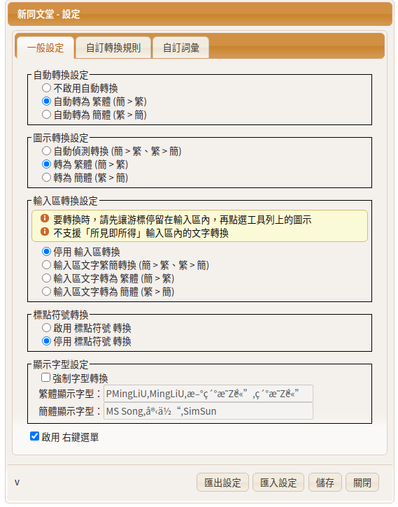
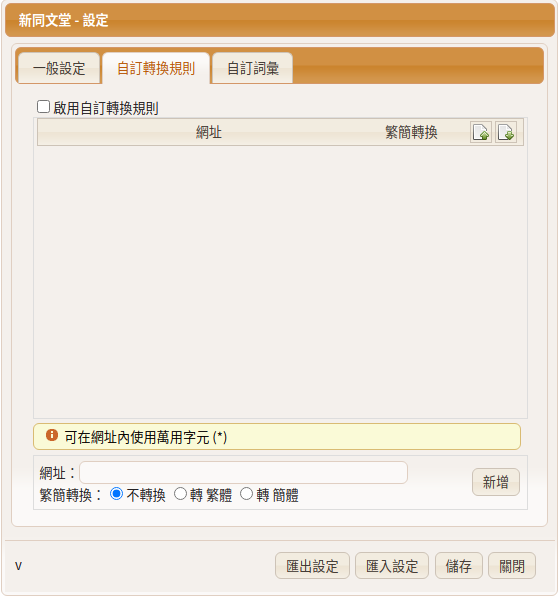
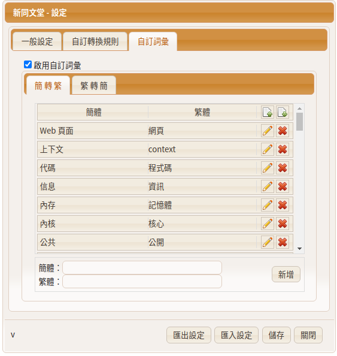
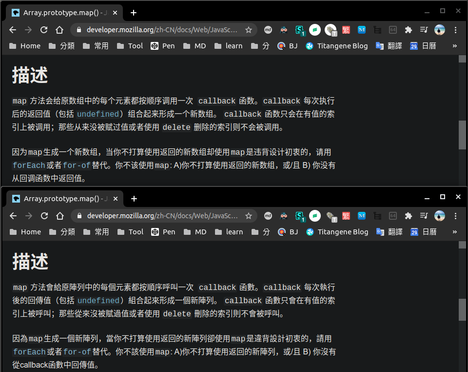

<!DOCTYPE html><html><head><meta charset="utf-8"><title>推薦 Chrome Extension：翻譯篇 - 新同文堂 | Titangene Blog</title><meta http-equiv="X-UA-Compatible" content="IE=edge"><meta name="viewport" content="width=device-width,initial-scale=1,maximum-scale=1"><meta name="HandheldFriendly" content="True"><meta name="apple-mobile-web-app-capable" content="yes"><meta name="author" content="Titangene"><link rel="shortcut icon" href="/favicon.ico"><link rel="alternate" href="/atom.xml" title="Titangene Blog"><meta name="description" content="本篇推薦我常用的 Chrome 翻譯 Extension：新同文堂。它不是像 Google 翻譯那樣單純的英翻中或簡轉繁，而是可以自訂指定的簡中用語轉成繁中用語，並能在任何&#x2F;指定頁面自動將中國用語轉成台灣用語。"><meta property="og:type" content="article"><meta property="og:title" content="推薦 Chrome Extension：翻譯篇 - 新同文堂"><meta property="og:url" content="https://titangene.github.io/article/recommend-chrome-extension-4.html"><meta property="og:site_name" content="Titangene Blog"><meta property="og:description" content="本篇推薦我常用的 Chrome 翻譯 Extension：新同文堂。它不是像 Google 翻譯那樣單純的英翻中或簡轉繁，而是可以自訂指定的簡中用語轉成繁中用語，並能在任何&#x2F;指定頁面自動將中國用語轉成台灣用語。"><meta property="og:locale" content="zh_TW"><meta property="og:image" content="https://titangene.github.io/images/cover/chrome-extension.jpg"><meta property="article:published_time" content="2020-08-29T23:17:20.000Z"><meta property="article:modified_time" content="2020-08-29T23:16:59.097Z"><meta property="article:author" content="Titangene"><meta property="article:tag" content="w3HexSchool"><meta property="article:tag" content="Chrome"><meta property="article:tag" content="Chrome Extension"><meta name="twitter:card" content="summary_large_image"><meta name="twitter:image" content="https://titangene.github.io/images/cover/chrome-extension.jpg"><meta name="twitter:creator" content="@titangeneTW"><meta name="twitter:site" content="@titangene_blog"><meta property="fb:admins" content="100001106016019"><meta property="fb:app_id" content="2470546159839111"><meta property="og:image:width" content="1200"><meta property="og:image:height" content="630"><meta name="google-site-verification" content="AaJ39L7h-nWwJjXJMhAMtXSF6H6BUgGWXC80kYvLic8"><link href="https://fonts.googleapis.com/css2?family=Roboto&display=swap" rel="stylesheet"><link href="https://fonts.googleapis.com/css?family=Source+Code+Pro&display=swap" rel="stylesheet"><link rel="stylesheet" href="https://cdnjs.cloudflare.com/ajax/libs/font-awesome/5.13.0/css/all.min.css"><link rel="stylesheet" href="https://unpkg.com/gitalk/dist/gitalk.css"><link rel="stylesheet" href="/style.css"><script async src="https://www.googletagmanager.com/gtag/js?id=UA-129758206-1"></script><script>!function(a){function n(){dataLayer.push(arguments)}a.dataLayer=a.dataLayer||[],n("js",new Date),n("config","UA-129758206-1")}(window)</script><script>function setLoadingBarProgress(e){document.getElementById("loading-bar").style.width=e+"%"}</script><meta name="generator" content="Hexo 4.2.0"><link rel="alternate" href="/atom.xml" title="Titangene Blog" type="application/atom+xml"></head></html><body><div id="loading-bar-wrapper"><div id="loading-bar"></div></div><script>setLoadingBarProgress(20)</script><header class="l_header"><div class="wrapper"><div class="nav-main container container--flex"><a class="logo flat-box" href="/">Titangene Blog</a><div class="menu"><ul class="h-list"><li><a class="flat-box nav-home" href="/">Home</a></li><li><a class="flat-box nav-archives" href="/archives">Archives</a></li></ul><div class="underline"></div></div><div class="m_search"><form name="searchform" class="form u-search-form"><input type="text" class="input u-search-input" placeholder="Search"> <i class="fas fa-search"></i></form></div><ul class="switcher h-list"><li class="s-search"><a class="fas fa-search" href="javascript:void(0)"></a></li><li class="s-menu"><a class="fas fa-bars" href="javascript:void(0)"></a></li></ul></div><div class="nav-sub container container--flex"><a class="logo flat-box" href="/">Titangene Blog</a><ul class="switcher h-list"><li class="s-comment"><a class="far fa-comment-alt" href="javascript:void(0)"></a></li><li class="s-top"><a class="fas fa-arrow-up" href="javascript:void(0)"></a></li><li class="s-toc"><a class="fas fa-list-ol" href="javascript:void(0)"></a></li></ul></div></div></header><aside class="menu-phone"><nav><a href="/" class="nav-home nav">Home </a><a href="/archives" class="nav-archives nav">Archives</a></nav></aside><script>setLoadingBarProgress(40)</script><div class="l_body"><div class="container clearfix"><div class="l_main"><article id="post-recommend-chrome-extension-4" class="post white-box article-type-post" itemscope itemprop="blogPost"><section class="meta"><h2 class="title"><a href="/article/recommend-chrome-extension-4.html">推薦 Chrome Extension：翻譯篇 - 新同文堂</a></h2><span class="post-time"><span class="post-meta-item-icon"><i class="fa fa-calendar"></i> </span><span class="post-meta-item-text">發表於</span> <time title="建立時間：2020-08-30 07:17:20" itemprop="dateCreated datePublished" datetime="2020-08-30T07:17:20+08:00">2020-08-30</time></span> <span class="comments-count"><span class="post-meta-divider">|</span> <span class="post-meta-item-icon"><i class="fas fa-comment"></i> </span><a href="https://titangene.github.io/article/recommend-chrome-extension-4.html#comments" class="article-comment-count">留言</a></span><div class="post-category"><span class="post-meta-item-icon"><i class="fa fa-folder"></i> </span><span class="post-meta-item-text">分類於</span> <span itemprop="about" itemscope itemtype="http://schema.org/Thing"><a href="/categories/tools/" itemprop="url" rel="index"><span itemprop="name">Tools</span></a></span></div></section><section class="toc-wrapper"><h3>目錄</h3><ol class="toc"><li class="toc-item toc-level-1"><a class="toc-link" href="#新同文堂"><span class="toc-text">新同文堂</span></a></li></ol></section><section class="article typo"><div class="article-entry" itemprop="articleBody"><p></p><p>本篇推薦我常用的 Chrome 翻譯 Extension：新同文堂。它不是像 Google 翻譯那樣單純的英翻中或簡轉繁，而是可以自訂指定的簡中用語轉成繁中用語，並能在任何/指定頁面自動將中國用語轉成台灣用語。</p><a id="more"></a><blockquote><p>其他推薦 Chrome Extension 相關文章可參閱 <a href="https://titangene.github.io/tags/chrome-extension/">推薦 Chrome Extension 系列文章</a>。</p></blockquote><p><a href="https://chrome.google.com/webstore/detail/google-translate/aapbdbdomjkkjkaonfhkkikfgjllcleb" target="_blank" rel="noopener">Google 翻譯</a> Extension 沒什麼好介紹的，大家都很熟悉了，但有一些缺點：</p><ul><li>近期的英翻中大多都是中國用語，與我們日常使用的用語不同</li><li>只能簡中轉成繁中，但無法將中國用語轉成台灣用語</li></ul><p>雖然常看這些用語已經能在腦中自動翻譯了，但在閱讀上還是會有一些不習慣。</p><p>如果網頁能自動轉換成台灣用語那就太好啦！而「新同文堂」就能解決這個問題！</p><h1 id="新同文堂"><a class="header-anchor" href="#新同文堂"></a>新同文堂</h1><p>下載連結：<a href="https://chrome.google.com/webstore/detail/new-tong-wen-tang/ldmgbgaoglmaiblpnphffibpbfchjaeg" target="_blank" rel="noopener">新同文堂</a></p><p>功能：</p><ul><li>自訂指定的簡中用語轉成繁中用語</li><li>開啟任何/指定頁面都能自動將中國用語轉成台灣用語</li></ul><p>「一般設定」內有很多可以選項設定，包括是否啟動自動轉換、標點符號轉換、字型轉換…等：</p><p></p><p>「自訂轉換規則」則是可自訂哪些網站是否要套用繁簡轉換的規則：</p><p></p><p>而「自訂詞彙」就是可依你習換的用語來設定：</p><p></p><p>像下面就是我自訂的詞彙，歡迎大家匯入使用：</p><script src="https://gist.github.com/titangene/8f015e54607f74bef8bf985fd426005f.js"></script><p>另外，也可參考其他人的設定：</p><ul><li><a href="https://github.com/doggy8088/newtongwen-settings" target="_blank" rel="noopener">doggy8088/newtongwen-settings</a></li><li><a href="https://github.com/pjchender/cn2tw4programmer/blob/master/src/terms/_newTongWenTang.json" target="_blank" rel="noopener">cn2tw4programmer/_newTongWenTang.json at master · pjchender/cn2tw4programmer</a></li></ul><p>實際用起來會像下圖這樣，上面是原本的中國用語，下面是透過新同文堂自動轉為台灣用語：</p><p></p></div><div class="article-tags tags"><a href="/tags/w3hexschool/" title="w3HexSchool">w3HexSchool</a> <a href="/tags/chrome/" title="Chrome">Chrome</a> <a href="/tags/chrome-extension/" title="Chrome Extension">Chrome Extension</a></div></section><div class="article-share-links"><span>分享：</span> <a class="fab fa-facebook-f" title="Facebook" target="_blank" href="javascript:window.open('https://www.facebook.com/sharer.php?u=https%3A%2F%2Ftitangene.github.io%2Farticle%2Frecommend-chrome-extension-4.html', 'Share on Facebook','width=600, height=600')"></a> <a class="fab fa-twitter" title="Twitter" target="_blank" href="javascript:window.open('https://twitter.com/share?url=https%3A%2F%2Ftitangene.github.io%2Farticle%2Frecommend-chrome-extension-4.html&amp;text=推薦 Chrome Extension：翻譯篇 - 新同文堂&amp;hashtags=w3HexSchool,Chrome,ChromeExtension&amp;via=titangene_blog', 'Share on Twitter','width=600, height=260')"></a> <a class="fab fa-linkedin-in" title="Linkedin" target="_blank" href="javascript:window.open('https://www.linkedin.com/shareArticle?mini=true&amp;url=https%3A%2F%2Ftitangene.github.io%2Farticle%2Frecommend-chrome-extension-4.html&amp;title=推薦 Chrome Extension：翻譯篇 - 新同文堂', 'Share on Linkedin','width=600, height=600')"></a> <a class="fab fa-facebook-messenger" title="Facebook Messenger" target="_blank" href="javascript:window.open('http://www.facebook.com/dialog/send?app_id=2470546159839111&amp;link=https%3A%2F%2Ftitangene.github.io%2Farticle%2Frecommend-chrome-extension-4.html&amp;display=popup&amp;redirect_uri=https%3A%2F%2Fwww.facebook.com%2Fdialog%2Freturn%2Fclose%23_%3D_', 'Send in Messenger','width=600, height=600')"></a> <a class="fab fa-telegram-plane" href="https://telegram.me/share/url?url=https%3A%2F%2Ftitangene.github.io%2Farticle%2Frecommend-chrome-extension-4.html&text=推薦 Chrome Extension：翻譯篇 - 新同文堂" target="_blank"></a></div><nav id="article-nav"><a href="/article/recommend-chrome-extension-3.html" id="article-nav-prev" class="article-nav-link-wrap" title="推薦 Chrome Extension：YouTube 篇" rel="prev"><strong class="article-nav-caption">Prev</strong><p class="article-nav-title">推薦 Chrome Extension：YouTube 篇</p><i class="fas fa-angle-left"></i></a></nav><section id="list_related_posts"><h2>相關文章</h2><ul class="related-posts"><li class="related-posts-item"><a class="related-posts-link" href="/article/recommend-chrome-extension-1.html">推薦 Chrome Extension：Markdown & 頁面主題篇</a><div class="related-posts-item-abstract">本篇推薦一些我常用的 Chrome Extension，包含複製分頁的 Markdown 格式的連結、將頁面變為暗主題。其他推薦 Chrome Extension 相關文章可參閱 推薦 Chrome Extension</div></li><li class="related-posts-item"><a class="related-posts-link" href="/article/recommend-chrome-extension-2.html">推薦 Chrome Extension：新分頁篇</a><div class="related-posts-item-abstract">本篇推薦一些我常用的 Chrome Extension，包含隨機風景照的新分頁、隨機小知識的新分頁，以及能列出訂閱技術文章的新分頁。其他推薦 Chrome Extension 相關文章可參閱 推薦 Chrome Exte</div></li><li class="related-posts-item"><a class="related-posts-link" href="/article/recommend-chrome-extension-3.html">推薦 Chrome Extension：YouTube 篇</a><div class="related-posts-item-abstract">本篇推薦一些我常用的 Chrome Extension，包含自動重播 YouTube 影片，以及把 YouTube 影片變成漂浮視窗，能讓你邊看影片時還能邊看其他內容。其他推薦 Chrome Extension 相關文章</div></li><li class="related-posts-item"><a class="related-posts-link" href="/article/git-commit-object.html">深入 Git：Git 物件儲存 - commit 物件</a><div class="related-posts-item-abstract">本篇將深入探討 Git 如何運作，在執行 git commit 時，Git 會如何建立和儲存 commit 物件。tree 物件會指向追蹤專案的不同 snapshot，若要取得這些 snapshot 就會遇到一些問題：必</div></li><li class="related-posts-item"><a class="related-posts-link" href="/article/git-tree-object.html">深入 Git：Git 物件儲存 - tree 物件</a><div class="related-posts-item-abstract">本篇將深入探討 Git 如何運作，Git 是如何建立和儲存 tree 物件。之前講到 blob 物件是由檔案內容來產生的，那 Git 是如何知道這些檔案內容是分別存在哪個目錄內的檔案名稱中？目錄名稱和檔案名稱就是由 tr</div></li><li class="related-posts-item"><a class="related-posts-link" href="/article/git-index.html">深入 Git：index 檔案</a><div class="related-posts-item-abstract">git add 會將檔案加入 index，究竟 index 到底存在哪？其實，通常會放在 .git/index，本篇將深入探討此檔案式如何紀錄有哪些檔案被加入 index。index 是一個二進位檔案，通常放在 .git</div></li></ul></section><section class="comments" id="comments"><h2>討論區</h2><div id="gitalk-container"></div></section></article><script>window.subData={title:"推薦 Chrome Extension：翻譯篇 - 新同文堂",tools:!0}</script></div><aside class="l_side"><section class="m_widget about"><div class="avatar-section"><style>.avatar-cover{background:url(/images/avatar_cover.jpg) 0 10%/cover no-repeat}</style><div class="avatar-cover"></div></div><div class="header">Titangene</div><div class="content"><div class="desc">利用 blog 紀錄學習歷程</div></div><div class="content"><meta itemprop="url" content="https://titangene.github.io"><div class="social-wrapper"><a itemprop="sameAs" href="https://github.com/titangene" class="social github" target="_blank" rel="external"><span class="fab fa-github-alt"></span> </a><a itemprop="sameAs" href="https://www.facebook.com/titangene.tw" class="social facebook" target="_blank" rel="external"><span class="fab fa-facebook-square"></span> </a><a itemprop="sameAs" href="https://www.instagram.com/titangene/" class="social instagram" target="_blank" rel="external"><span class="fab fa-instagram"></span> </a><a itemprop="sameAs" href="https://www.flickr.com/photos/titangene" class="social flickr" target="_blank" rel="external"><span class="fab fa-flickr"></span> </a><a itemprop="sameAs" href="/atom.xml" class="social rss" target="_blank" rel="external"><span class="fas fa-rss"></span></a></div></div></section><section class="m_widget facebook_page"><div class="fb-page" data-href="https://www.facebook.com/titangene.blog/" data-width="250" data-small-header="false" data-adapt-container-width="false" data-hide-cover="false" data-show-facepile="true"><blockquote cite="https://www.facebook.com/titangene.blog/" class="fb-xfbml-parse-ignore"><p><a href="https://www.facebook.com/titangene.blog/" class="social facebook" target="_blank"><span class="fab fa-facebook-square"></span></a></p><p><a href="https://www.facebook.com/titangene.blog/" target="_blank" rel="noopener">Titangene Blog</a></p><p>Loading...</p></blockquote></div></section><section class="m_widget recent"><div class="header">Recents</div><div class="content"><ul class="entry"><li><a itemprop="url" class="flat-box" href="/article/recommend-chrome-extension-4.html"><time>2020-08-30</time><div class="name">推薦 Chrome Extension：翻譯篇 - 新同文堂</div></a></li><li><a itemprop="url" class="flat-box" href="/article/recommend-chrome-extension-3.html"><time>2020-08-23</time><div class="name">推薦 Chrome Extension：YouTube 篇</div></a></li><li><a itemprop="url" class="flat-box" href="/article/recommend-chrome-extension-2.html"><time>2020-08-16</time><div class="name">推薦 Chrome Extension：新分頁篇</div></a></li><li><a itemprop="url" class="flat-box" href="/article/recommend-chrome-extension-1.html"><time>2020-08-09</time><div class="name">推薦 Chrome Extension：Markdown &amp; 頁面主題篇</div></a></li><li><a itemprop="url" class="flat-box" href="/article/jest-jquery-dom-testing.html"><time>2020-08-02</time><div class="name">Jest：DOM 測試 (jQuery)</div></a></li><li><a itemprop="url" class="flat-box" href="/article/jest-manual-mocks.html"><time>2020-07-26</time><div class="name">Jest：Manual Mocks</div></a></li><li><a itemprop="url" class="flat-box" href="/article/jest-timer-mocks.html"><time>2020-07-19</time><div class="name">Jest：Timer Mocks</div></a></li></ul></div></section></aside><script>setLoadingBarProgress(60)</script></div></div><footer id="footer" class="clearfix"><div class="social-wrapper"><a href="https://github.com/titangene" class="social github" target="_blank" rel="external"><span class="fab fa-github-alt"></span> </a><a href="https://www.facebook.com/titangene.tw" class="social facebook" target="_blank" rel="external"><span class="fab fa-facebook-square"></span> </a><a href="https://www.instagram.com/titangene/" class="social instagram" target="_blank" rel="external"><span class="fab fa-instagram"></span> </a><a href="https://www.flickr.com/photos/titangene" class="social flickr" target="_blank" rel="external"><span class="fab fa-flickr"></span> </a><a href="/atom.xml" class="social rss" target="_blank" rel="external"><span class="fas fa-rss"></span></a></div><div>© 2018 - 2020 <span itemprop="copyrightHolder">Titangene</span></div><div>Powered by <a href="https://hexo.io/" target="_blank" class="codename" rel="external noopener">Hexo</a> - Theme <a href="https://github.com/stkevintan/hexo-theme-material-flow" target="_blank" class="codename" rel="external noopener">MaterialFlow</a></div><div><a rel="license noopener" href="http://creativecommons.org/licenses/by-nc-sa/4.0/" target="_blank" rel="external noopener"></a></div></footer><script>setLoadingBarProgress(80)</script><script src="//cdnjs.cloudflare.com/ajax/libs/jquery/2.1.4/jquery.min.js"></script><script src="https://cdnjs.cloudflare.com/ajax/libs/clipboard.js/2.0.0/clipboard.min.js"></script><script src="https://unpkg.com/gitalk/dist/gitalk.min.js"></script><script src="/js/jquery.fitvids.js"></script><script>var SEARCH_SERVICE="hexo",ROOT="/";ROOT.endsWith("/")||(ROOT+="/")</script><script src="/js/search.js"></script><script src="/js/app.js"></script><script src="/js/clipboard-use.js"></script><script type="text/javascript">var gitalk=new Gitalk({clientID:"dd1684f31ee17e25c22b",clientSecret:"4b51bb4a5996b04d58821a6e3da8558f23da4cdf",id:window.location.pathname,repo:"hexo-blog",owner:"titangene",admin:"titangene",distractionFreeMode:"true"});gitalk.render("gitalk-container")</script><div id="fb-root"></div><script>window.fbAsyncInit=function(){FB.init({appId:"2470546159839111",autoLogAppEvents:!0,xfbml:!0,version:"v2.11"}),FB.AppEvents.logPageView()},function(e,n,t){var o,s=e.getElementsByTagName(n)[0];e.getElementById(t)||((o=e.createElement(n)).id=t,o.src="//connect.facebook.net/zh_TW/sdk.js",s.parentNode.insertBefore(o,s))}(document,"script","facebook-jssdk")</script><script>setLoadingBarProgress(100)</script></body>